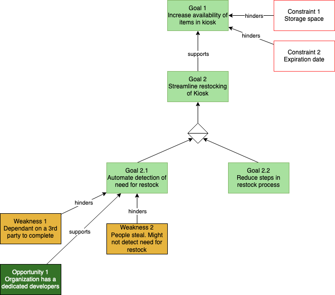
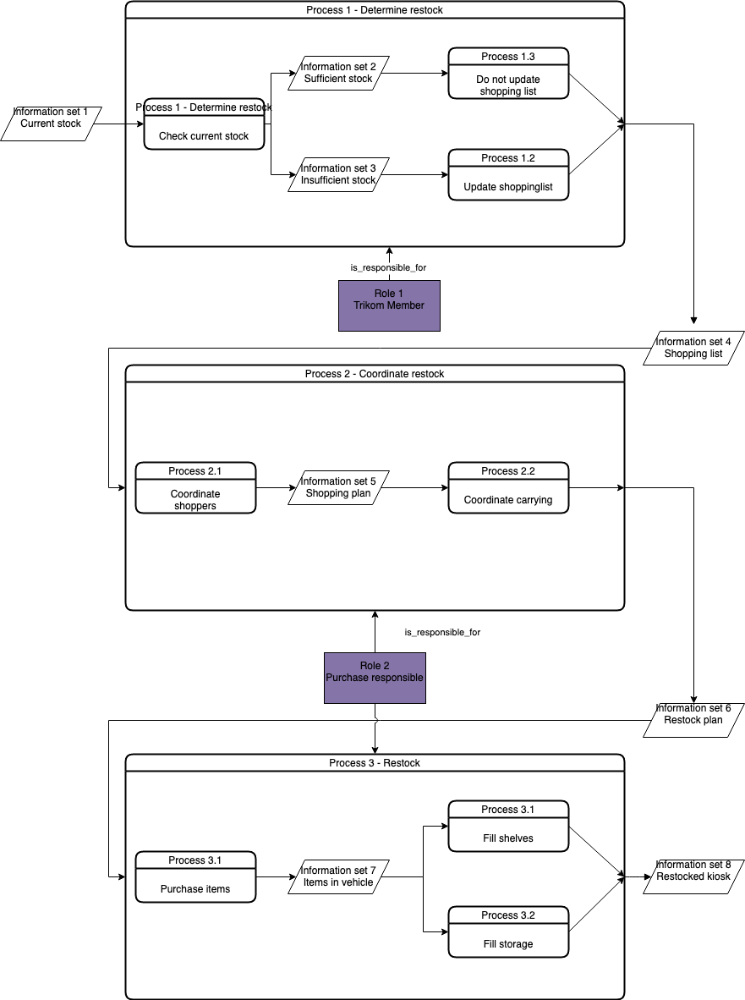
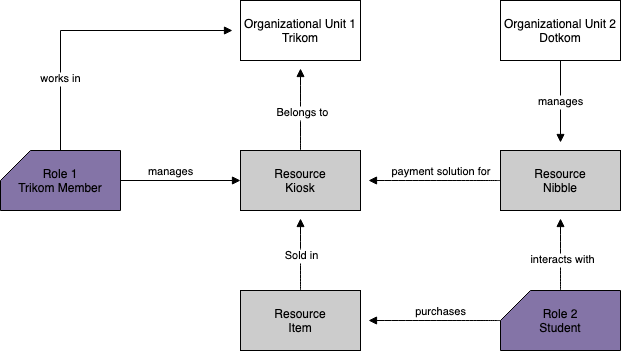
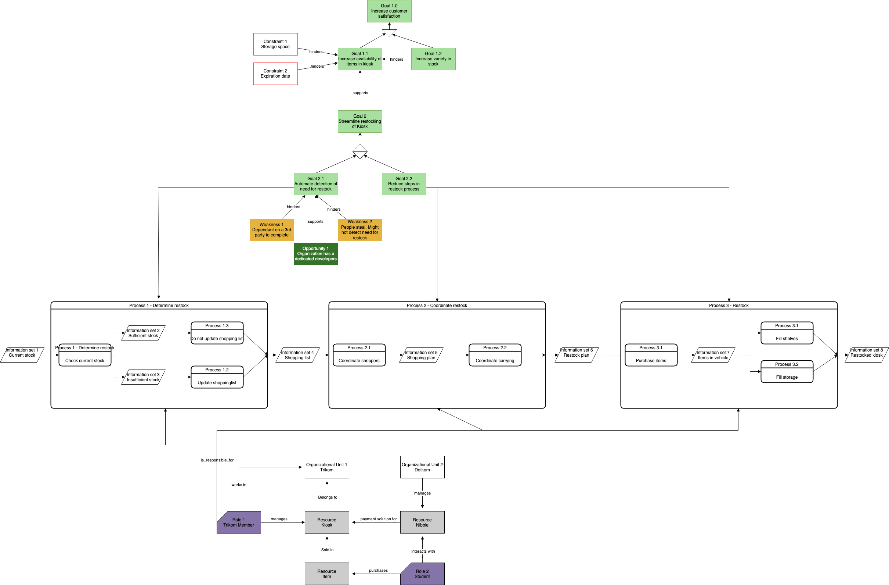

1. Enterprise Modeling
1.1. Case Description
The selected case and its focus will be on the student association, Online. Online is one of the most significant student associations at NTNU, with nearly a thousand active members. Hierarchically, Online is built up by several committees, some larger than others. Out of the nearly thousand active members, at least 160 of them are committee members powering Online.
The case will specifically target a process in one of the committees - Trikom. Trikom is the committee for well-being. The committee is in charge of the kiosk at Online’s office and organizes smaller social events, to mention some.
The case itself regards the kiosk, hereafter called 'Kiosken.' Kiosken has a relatively broad selection of both snacks and soft drinks. Students purchase these items through an internal economy connected to the student ID cards.
Students would like to have all items available at all times. However, through some research and personal experiences, it is clear that the availability of items is unpredictable. For example, students experience empty shelves of their favorite snacks for an extensive period, and there is no way of knowing when a restock happens.
As for the committee members of Trikom, there are several annoyances as well. The restocking process appears to be quite comprehensive and unpredictable. 'When will it happen,' 'who is responsible,' and 'who does what' are frequently asked questions. Further, it appears to be much micromanagement which in an ideal world would not exist.
As a member of Online, I am a frequent user of Kiosken. The problems mentioned above significantly impact me as a regular customer. My biggest motivation for the presented case is to figure out how to streamline the restocking process and thus provide better and more predictable availability of the goods in Kiosken.
By utilizing an enterprise model, from Trikom’s perspective, one can hopefully understand the underlying processes of the restocking and identify innovations to streamline those.
Case Processes
The overall process of keeping Kiosken restocked, is a combination of several smaller processes. The following paragraphs are meant to give a brief introduction to these.
The Process of Identifying a Need For a Restock
As of now, there is no concrete process of identifying the need for a restock. The need is identified by regular users reporting a lack of items, or by Trikom members checking manually. Even though regular users report few items, or they are identified as out of stock by Trikom themselves, the actually restock may not happen immediately. It is a common practice to wait for Kiosken to be almost out of stock of all items before a restock is even planned.
The Process of Planning a Restock
When a restock is about to happen, a shopping list is to be made. All items in Kiosken is counted, and how much of each should be bought is calculated. A part of the planning is also to check the dates of existing items, as well as checking the storage room for space for the new ones. When the storage is checked, and the shopping list is made, the Trikom members have to coordinate the shopping trip. Assigning different tasks to different Trikom members, varying from driving and shopping, to carrying and filling shelves and storage.
The Process of Restocking
A car has to be rented and several members have to perform the actual shopping. The shopping is done at a partner. When the shopping is finished, either the same members as those who shopped, or others, have to carry all the new items into the storage unit and restock the shelves.
Once the entire restocking process is initiated, it is time consuming and involves many parts. Ideally certain sub processes can be be improved or even eliminated by innovation.
1.2. Purpose
Kiosken is not generating any income for Online. Most business constantly aim to increase their profit. However, the operation of Kiosken is a zero-profit project for Online. Better availability will not generate more revenue, but the user satisfaction will greatly increase, which is in line with Trikoms goals.
This model should serve as a beneficial overview of the key processes of the restocking of Kiosken. The current models give a precise overview of the relevant parts of the case AS IS. No unnecessary information will surface, and the models have a logical easy-to-follow structure. By getting a overview of all sub process, actors and goaals, Trikom could identify steps and processes that could be greatly improved. Through this, innovation can be applied, and Trikom optimize their processes, thus resulting in a better service for Onlines members.
1.2.1. Goals
There are many reasons to create enterprise models.
A model is a generalized representation of a piece of reality, with only relevant real‐world properties taken into account during modeling. [1]
In other words, models help to represent and understand how an enterprise works. The models represent a relevant piece of reality, aiming to give greater insight into information, functions, behaviour and further on.
In this case, the models will as mentioned be used to analyze the business processes. To be precise, some sub goals will be identifying possible innovation(s) and identifying potential threats to reaching the business goals. Among the goals of the model,
1.3. The Model
| Expectations | Theory related |
|---|---|
Models in ArchiMate AND 4EM. The actual model(s) must be submitted along with the report (Visio, LucidChart, Archimate, etc.). The report should include screen shots of the model with relevant explanations. |
The textual descriptions of your model should explain the non-obvious parts. The model should for the most part explain it self. |

This model is very interesting because of this and that

This model is very interesting because of this and that

This model is very interesting because of this and that

This model is very interesting because of this and that
1.4. Design of the Model
| Expectations | Theory related |
|---|---|
This section should explain the design decisions and how you have designed your model to meet its purpose. |
How have you structured your model to reflect your case and the purpose? How does the choice of the enterprise aspects reflect your case? |
1.5. Perspectives/Aspects
| Expectations | Theory related |
|---|---|
The model should include at least three perspectives/aspects of an enterprise in both 4EM and ArchiMate. Enterprise models by definition contain models of several perspectives (referred to also as sub-models), and they relate to one another. Note that the relationships across the perspectives are very important. |
In your report, you should explain them and how they relate to one another. An Enterprise model vs. several models of a single aspect is important here; hence the relationships across the different aspects and layers must be described and explained. The student should demonstrate that they understand the relevance of the relationships across the different aspects. |
1.6. Modeling Tools
| Expectations | Theory related |
|---|---|
At some point in the modelling process, you may notice that one of the languages is better suited for your case. If so, after modelling 3 aspects in both languages, you can select one of the languages to continue modelling with. Explain the reasons for your choice. |
You should be able to explain why you think one approach/language is better suited to model your case. Note: it may be that both are equally suitable. Reflect on the modelling choices you have made by comparing the two modelling languages and explain. Are there other features that you would have like to have in a modelling tool? |
1.7. Using the Model
| Expectations | Theory related |
|---|---|
How would you use your model? "Views" are how you would "extract" some information from your model for a particular purpose. E.g. A view that serves a specific sub-goal for your model. Or what a specific stakeholder/user would like to see or what is relevant in a specific situation. How would you use the model to obtain such a view? The answer expected here must include a discussion of the view and how the model is used to get. |
You should be able to explain why you think one approach/language is better suited to model your case. Note: it may be that both are equally suitable. Reflect on the modelling choices you have made by comparing the two modelling languages and explain. Are there other features that you would have like to have in a modelling tool? |
2. Open Service Innovation and Service Design
2.1. Identify Innovation
| Expectations | Theory related |
|---|---|
Describe a service-oriented approach to your enterprise, with one or a few services. (Innovation) |
How would your enterprise remain agile and innovate? Describe the service idea and how this could innovate your enterprise. Describe the type of innovation w.r.t. the theory; e.g. open or closed innovation, digital, process, etc. Reflect on the type of innovation(s), e.g. is this a service innovation, process, digital or a business innovation? What is the ICT or digital component of the innovation? |
2.2. Create a Customer Journey
| Expectations | Theory related |
|---|---|
Describe the service as a set of experience points (or touch points) or a customer journey. Include this in the report. |
Explain the idea behind the customer journey and how you envisage the customers' experiences (Innovation). Explain the customer journey from the customers' and the enterprise’s perspectives. |
2.3. Blueprint
| Expectations | Theory related |
|---|---|
Model the blueprint for the service. Include this in the report. |
Describe the details of realising the service and where technology is relevant. Describe in detail how the ICT components are affected or how any new components will be integrated into te current Enterprise Architecture. |
2.4. Reflections
| Expectations | Theory related |
|---|---|
Reflect on the revelance of innovation and the use of complementary of modelling methods. Identify the main differences between service design and enterprise modelling. Explain how service modelling complements enterprise |
3. Business modelling
3.1. Business and Value Modeling
| Expectations | Theory related |
|---|---|
Create a sustainable business model or a value model for the new (innovative) services in your enterprise using the relevant templates. Include this in the report. |
Explain the choice of your business modelling framework and why it is the most appropriate for your case. Explain the business or value model you have created and the value proposition. |
4. Redesigned enterprise model
4.1. Changes in the Enterprise Model
| Expectations | Theory related |
|---|---|
Identify the changes that you have to make in your enterprise to realise the business model and deliver the services. Enhance your 4EM or Archimate model from part 1. The new model should be submitted. (Hint: did the service innovation create more goals for your enterprise? If so, are there implications for the processes, roles, technology, etc. in your enterprise?) |
Explain the changes in your enterprise model and how they would support the service innovation e.g. new or changed processes, new organisational structure, new competences and therefore new roles and actors, perhaps new technological solutions, etc.). Note: again, it’s important to be clear about the purpose of the model as was relevant for part 1. |
4.2. Enterprise Model & Enterprise Architecture
| Expectations | Theory related |
|---|---|
Structure model according to an Enterprise Architecture Framework, e.g. TOGAF |
Reflect on the relationship between Enterprise Modelling and Enterprise Architecture. |
5. Reflection
5.1. Model Evaluation
| Expectations | Theory related |
|---|---|
Assess if your model meets its purpose. You can use any of the methods we learned for evaluating models or any other means. (Hint - connect your model to its purposes and ask if it meets the purpose |
How did you evaluate yur model - what evaluations methods (from theory) did you consider? Justify your choice of evaluation method(s). Describe how you evaluate your model, using the model and include screen shots of the relevant parts of the model. Describe why you think your model is good and meets the purpose (or not). |
5.2. Reflections
| Expectations | Theory related |
|---|---|
Describe what you have done. Reflections and lessons learned. Reflect on the work, the process you followed and share some of your thoughts. |
Also discuss the modelling experience. And what would you do anything different next time? |